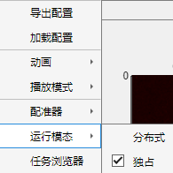

1.3.6 运行模态

运行模态包括 分布式 与 独占两种状态。程序启动时将根据硬件状况自动选择对应的运行模态。
独占：此时的配准资源完全驻留内存，推荐个人PC或独占高性能工作站使用。
独占模式可用条件为 加载数据文件后 的可用内存总量不少于 (启用核心数 + 2*DataSize)GB 时使用。
例如本机CPU核心数量8，并行计算时保留2个核心，即将处理的文件数据量(注意ims文件数据量约为文件大小的一半，nd2与tif文件数据量近似为文件大小)为3GB，则可用内存总量不少于(8-2+2*3)GB = 12GB时可以启用独占模式。分布式：此时除必要资源驻留内存，文件资源以内存映射形式保存在计算机硬盘上，推荐大文件处理时使用。
分布式模式可用条件为 配准开始前 可用内存总量应不少于 (启用核心数) GB。
当可用内存总量少于该阈值，MATLAB 并行计算工具箱计算时将自动发生内存-硬盘数据交换，可能影响配准效率或导致异常。
若当前计算机被识别为Computation Server@silab, Reg3D程序将强制启用分布式运行模态，分布式资源调度器将自动协调 多用户 以避免资源冲突导致的MATLAB崩溃。注1：运行模态切换时将发生内存-硬盘自动数据交换，期间Reg3D程序将短暂失去交互响应。
注2：文件读取、文件写入及配准过程中无法更改运行模态。
注3：对于两模态均可使用的情况，推荐使用独占模式（具有更高的配准速度）。